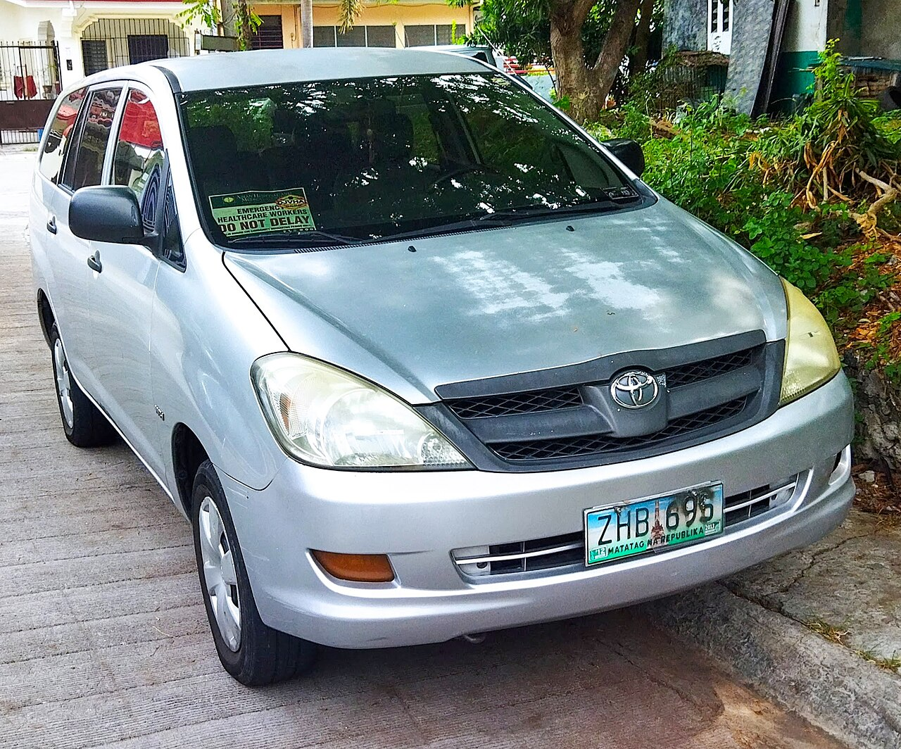
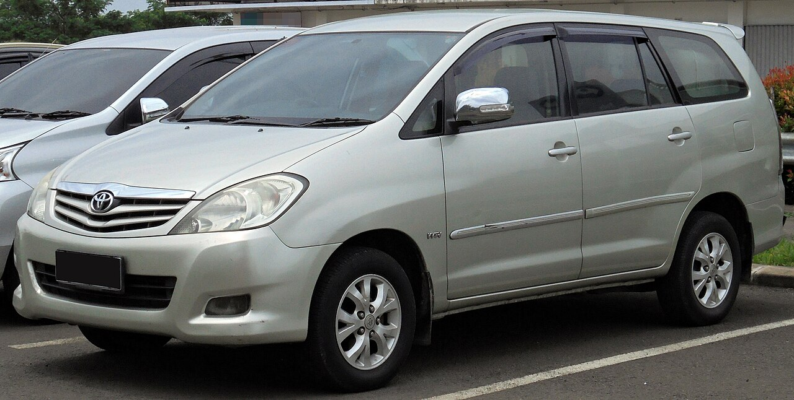
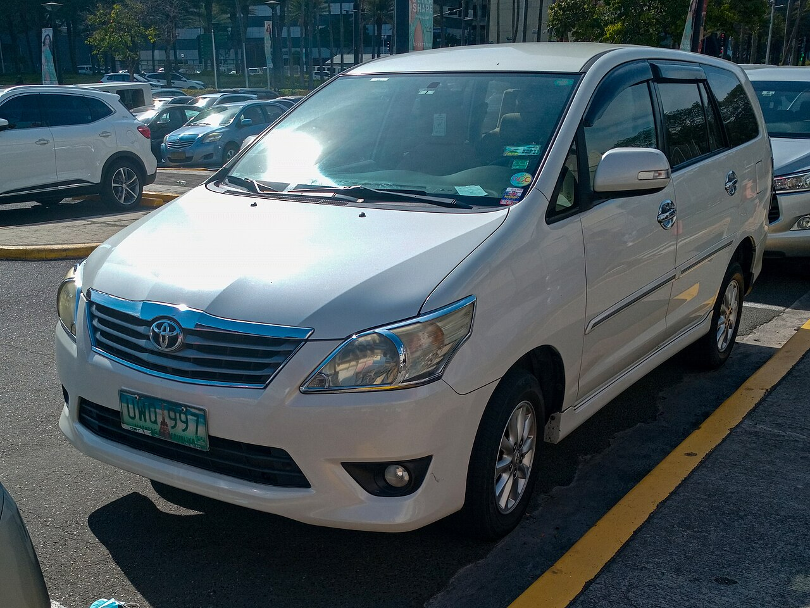
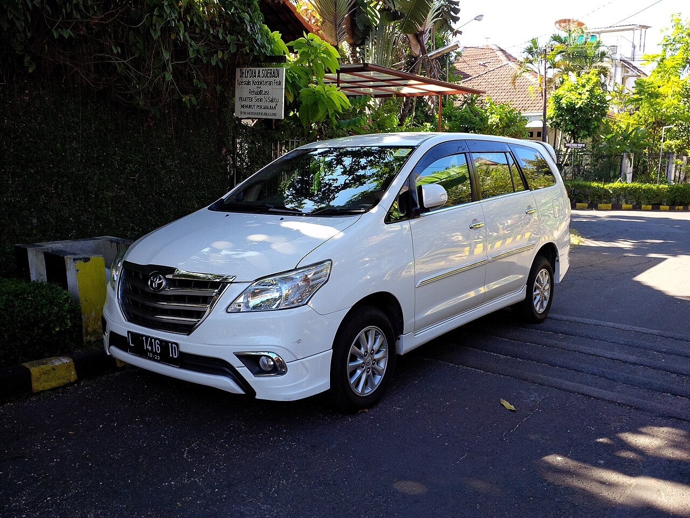
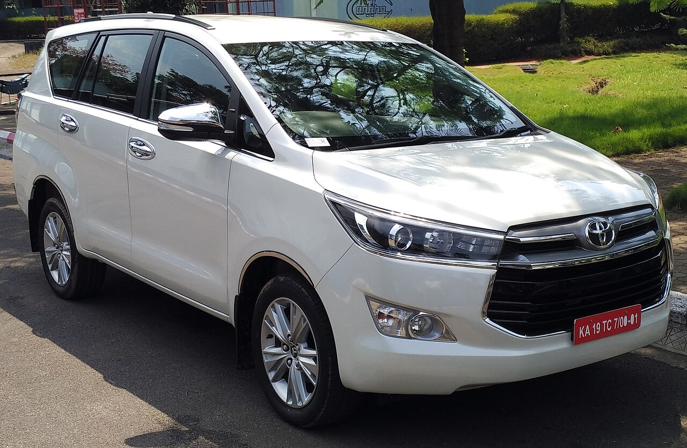
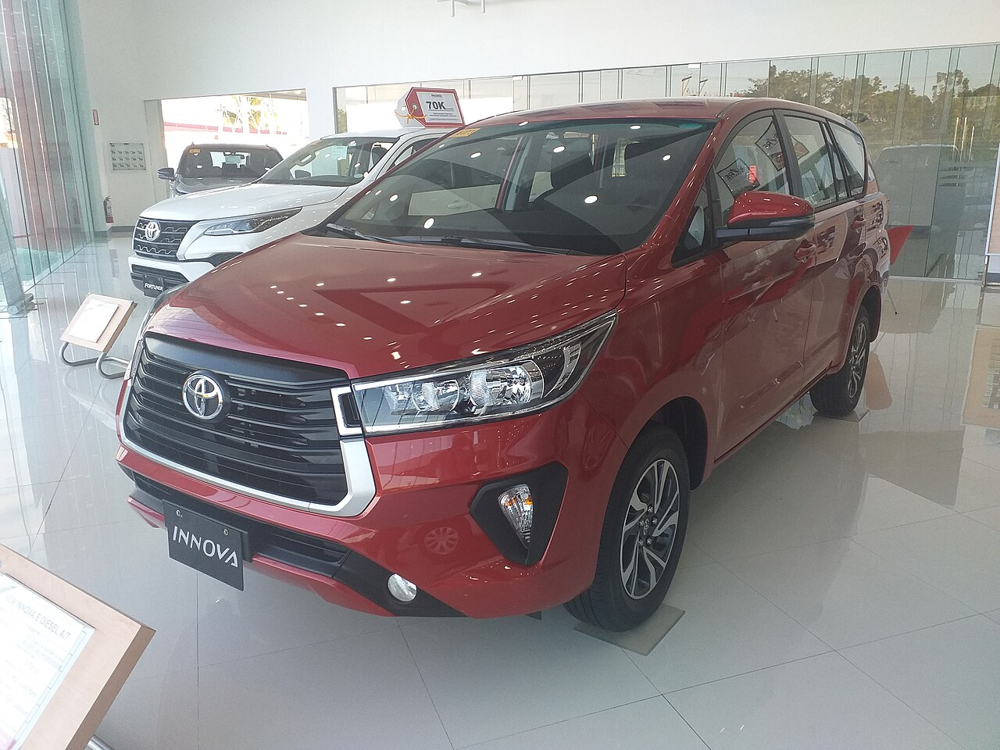
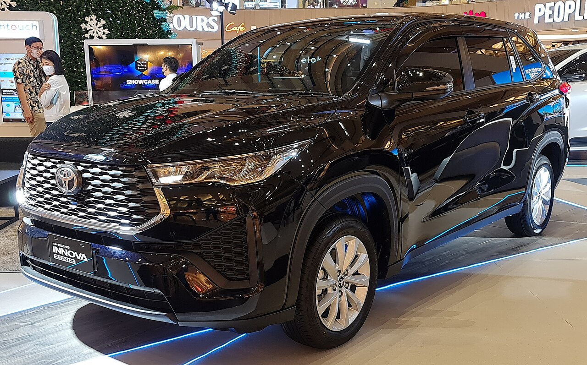

Innova
Feb 2005 – early 2016
Tall and boxy. Short bonnet, upright glass. A wide chrome smile means a late one, around 2013–2015.
India reference · 2005–2026
The original Innova, the Crysta, and the Hycross. What changed in the metal, how to tell them apart, and what a new one costs. Prices are ex-showroom as of September 2026 and do not include Kerala road tax or insurance.
These are simplified side views, drawn to show proportion. They are not manufacturer photos.
Feb 2005 – early 2016
Tall and boxy. Short bonnet, upright glass. A wide chrome smile means a late one, around 2013–2015.
May 2016 – expected around 2027
Longer bonnet, sharper nose, closer to a Fortuner from the side. A 2020 facelift has slimmer lamps and a larger grille.
Jan 2023 – on sale
Lower, with a raked windscreen. From the side it reads as a large car. The Crysta still reads as a van.
The first two Innovas are a small truck with three rows of seats. The Hycross is a large car.
Two metal rails run the length of the floor, with cross pieces. The cabin is bolted on top. Filled circles are the rear wheels, the ones that get the power. You can feel the spinning shaft as a hump between the front seats.
One stiff body, no separate rails. Filled circles are the front wheels. They steer and they drive. The floor is flatter because there is no shaft to the back.
Passengers and luggage sit over the rear tyres. Those are the tyres that push. More weight on a tyre means more grip, so a Crysta with seven people presses its driving tyres into the road as it climbs.
A Hycross asks the front tyres to steer and to drive, while the people sit behind them. On a wet hairpin the nose is the light end. The front tyres are easier to spin.
They last on rough kilometres because the rear axle is one solid beam, the rails take the bending, and workshops already know the bushes, clutch, shaft, and differential. A side impact that bends a rail is often the end of the car. Floodwater in the axle ruins it quietly.
Feb 2005 – early 2016
Bones. Ladder frame, same family as the Hilux and Fortuner of that era.
Drive. Rear-wheel drive. The engine pushes the back wheels.
Engines. 2.0 petrol, 136 PS, manual. 2.5 diesel, 102 PS, manual. The diesel got an intercooler around the BS4 change. Power stayed about 102 PS; response improved.
Seats. 7-seat captain chairs, or 8-seat with a middle bench. Trims climb E, then G, then V, then Z. Dealers call the faces Type 1, Type 2, Type 3, and Type 4.
Launch price on 24 February 2005: petrol from ₹6.82 lakh, diesel from ₹7.42 lakh. Before 2015, a base E often had a weak rear blower. The 2015 update put dual airbags and rear air-con vents on every variant.
May 2016 – on sale, expected to end around 2027
Bones. Still a ladder frame, with thicker rails than the first Innova. Almost no shared parts with the old car. Longer, wider, and a few hundred kilos heavier.
Drive. Rear-wheel drive. Same basic idea, with more power.
Engines. 2016–2020: 2.4 diesel manual (150 PS) and 2.8 diesel automatic (174 PS), plus a 2.7 petrol from August 2016. From November 2020 the 2.8 was dropped and a 2.4 automatic took its place. BS6 diesels need AdBlue. From 2023 only the 2.4 diesel manual remains.
Seats. 7-seat or 8-seat. Trims are GX, then VX, then ZX. Think of them as the new G, V, and Z. ZX is 7-seat only. A later GX+ sits between GX and VX.
If you see an automatic Crysta, it is a 2022 or older car. A 2.8 badge means 2016–2020. Real-world tour use is often 10–13 km/l. If the AdBlue tank on a late-2020-onward car runs dry, the engine cuts power.
Jan 2023 – on sale
Bones. Monocoque shell. The body itself is the frame. In Indonesia this car is the Innova Zenix. Maruti sells a close cousin as the Invicto.
Drive. Front-wheel drive. No diesel. The selector is a small toggle. The hybrid decides when the petrol engine joins the electric motor.
Engines. 2.0 petrol, about 174 PS, CVT, claimed 16.1 km/l. Strong hybrid, about 184 hp combined, e-CVT, claimed 23.2 km/l.
Seats. Petrol cars are G, then GX, then GX(O). Hybrids are VX, then ZX. G through VX come as 7-seat or 8-seat. ZX and ZX(O) are 7-seat only, with ottomans on the higher trims.
These names are only for the first Innova, 2005 to early 2016. Same ladder, same 102 PS diesel. Each new type is a facelift: look at the grille, the lamps, and the bumper. The doors and the glass stay the same. Some yards call every 2012–2016 car a Type 3. Use the face in the photo.

The launch face. Nothing on this car was a facelift yet.
Photo: Ethan Llamas, 2007 Innova 2.0 J, Wikimedia Commons, CC BY-SA 4.0.

Same soft body as Type 1. The face is what moved.
Photo: オーバードライブ83, 2009 Innova 2.0 G, Wikimedia Commons, CC BY-SA 4.0.

This is the first face you can separate from across the road.
Photo: Ethan Llamas, 2012 Innova 2.0 G, Wikimedia Commons, CC BY-SA 4.0.

The lamps stay in the Type 3 shape. The grille is the tell.
Photo: Alex Neman, 2013 Innova V, Wikimedia Commons, CC BY-SA 4.0. The Indian Z adds a roof spoiler this front view does not show.
Sellers do not call these Type 5. The 2016 car is a new generation. The 2020 car is a facelift of that generation. The Hycross is another new car.

New body. Do not line it up with a Type 4 and expect the same doors.
Photo: Premnath Kudva, 2016 Indian Innova Crysta 2.4 Z, Wikimedia Commons, CC BY-SA 4.0.

Same Crysta body. The nose is the change.
Photo: Captainmorlypogi1959, 2021 facelift Innova, Wikimedia Commons, CC BY-SA 4.0. Photographed in the Philippines. The Indian Crysta bumper and alloys differ a little; the taller grille and sharper lamps are the same change.

A new car again, not a facelift of the Crysta.
Photo: Alex Neman, 2022 Innova Zenix V, Wikimedia Commons, CC BY-SA 4.0.
The letter is the equipment, not the year. A 2011 G and a 2014 G are the same idea: the middle car. The face tells you the type. The letter tells you what is inside.
| Letter | Who bought it | What you can see |
|---|---|---|
| E | Taxis and the lowest price | Early cars have window winders, steel wheels, and a plain steering wheel. Often 8 seats. No airbags until the 2015 update. Rear blower is often missing. Classifieds may say E PS, which means this base car with power steering. |
| G | Families, and the usual rental buy | Power windows and a fuller cabin than the E. Early years were split into G1, G2, G3, and G4. G4 is the one to prefer: rear air-con, rear wiper, and a rear defogger. Lower G cars can lack the rear blower. No airbags on a G until 2015. |
| V | The loaded family car, and the top trim until Z arrived | Alloys, fog lamps, chrome mirrors and door handles, wood-look door trim, ABS, and two airbags. From Type 2, automatic climate control and buttons on the steering wheel. From Type 3, a touchscreen. |
| Z | The show car, Type 4 only, from 2013 | Everything on the V, plus two-tone leather, a roof spoiler, body stickers, and more chrome. This is the last word on the old Innova before the Crysta. |
| Old Innova | Crysta | Hycross | In one line |
|---|---|---|---|
| E | GX Fleet | G Fleet | The working car. Fewer comfort bits, often bought for tours and taxis. |
| G | GX, and later GX+ | G, then GX petrol | The one most people should buy. Enough equipment, and the 8-seat option is here. |
| V | VX | VX hybrid | The comfortable family car. On a Hycross, VX is where the hybrid starts. |
| Z | ZX | ZX hybrid | The top cabin. 7 seats only, so one fewer paying passenger than an 8-seat G or GX. |
A Crysta GX from 2018 is a Type of car people still call “a G” in conversation. The badge on the tailgate will say GX, not G. Hycross petrol stops around GX(O). From VX upward it is the strong hybrid.
A facelift keeps the same car and changes the face and the kit. A new generation replaces the car.
| Year | What you would notice |
|---|---|
| 2005 | Type 1. Launch, 24 Feb. Replaces the Qualis. E, G, and V. Petrol from ₹6.82 lakh, diesel from ₹7.42 lakh. |
| 2009 | Type 2, the first facelift. New grille and bumpers, on sale in India from 28 Jan. Same engines. Around April 2010 the BS4 diesel adds an intercooler badge. |
| 2012 | Type 3, the second facelift. Sharp headlamps, new bumper, touchscreen on the V. |
| 2013–2015 | Type 4. Big chrome grille and the new Z trim in 2013. In 2015, dual airbags and rear air-con vents become standard on E and G as well. Last face before the Crysta. |
| May 2016 | All-new Crysta. 2.4 diesel manual and 2.8 diesel automatic. Petrol 2.7 added in August after the large-diesel limits in Delhi. |
| Nov 2020 | Facelift: new face, more kit. 2.8 engine dropped. 2.4 automatic replaces it. BS6 diesels need AdBlue. |
| Jan 2023 | Hycross goes on sale. Crysta returns beside it as 2.4 diesel manual only. Petrol Crysta and automatic Crysta stop. |
| 2026 | Crysta cabin and small styling tweaks. Same 2.4 diesel manual. Price ₹19.72–26.63 lakh. Expected last stretch before a 2027 wind-down under tighter fleet emission rules. |
Kilometres per litre. Bars are midpoints of commonly reported real-world ranges with passengers, not the official test figures.
Claimed figures sit higher: about 16.1 km/l for the Hycross petrol and 23.2 km/l for the hybrid. A Crysta on a highway tour often matches the old diesel on fuel and pulls past traffic more easily. Scale tops out at 24 km/l so the hybrid claim would fill the row.
Ex-showroom, September 2026. Kerala on-road is higher because lifetime tax is charged on the original price.
| Model | Engine | Ex-showroom | Seats |
|---|---|---|---|
| Crysta GX / GX Fleet | 2.4 diesel manual | ₹19.72 lakh | 7 |
| Crysta GX | 2.4 diesel manual | ₹19.77 lakh | 8 |
| Crysta GX+ | 2.4 diesel manual | ₹21.15–21.20 lakh | 7 or 8 |
| Crysta VX | 2.4 diesel manual | ₹24.93–24.98 lakh | 7 or 8 |
| Crysta ZX | 2.4 diesel manual | ₹26.63 lakh | 7 only |
| Hycross G / GX petrol | 2.0 petrol CVT | ₹18.70–20.97 lakh | 7 or 8 |
| Hycross VX / VX(O) hybrid | 2.0 strong hybrid | ₹26.76–28.82 lakh | 7 or 8 |
| Hycross ZX / ZX(O) hybrid | 2.0 strong hybrid | ₹31.20–31.84 lakh | 7 only |
Crysta prices: Autocar India, 2026 model year. Hycross: Autocar India, September 2026, Delhi ex-showroom. Some listings add a ZX(O) LE near ₹33 lakh. The 2027 Crysta wind-down is the reported plan around CAFE-3 norms, not a date Toyota has confirmed.
A bench in the middle, so three people sit there and two sit in the last row. That is seven passengers plus a driver. This is the layout tour groups ask for.
Two captain chairs in the middle. More knee room, an aisle to the back, and one fewer paying passenger. On a Crysta or Hycross, the top ZX trim is this layout only.
Metric horsepower. Pferdestärke is German for “horse strength.” 136 PS is about 134 bhp. When you compare Indian brochures, treat PS and bhp as the same idea: how strong the engine is.
Power is how quickly the car can get up to speed. The other number, Nm, is the pull you feel in a low gear on a ghat with the car full. The old diesel had 102 PS, which is why overtaking needed a long straight.
A mid-life update of the same car. Toyota keeps the body, the frame, and usually the engines, and changes the grille, lamps, bumpers, wheels, and some interior trim.
A 2009 Innova is still the first Innova. A 2020 Crysta is still the 2016 car. The Crysta of May 2016 was a new generation: new body, new engines, new interior.
_2.0_J_2007.jpg){kind=link}
.jpg){kind=link}

,_West_Surabaya.jpg){kind=link}


.jpg){kind=link}